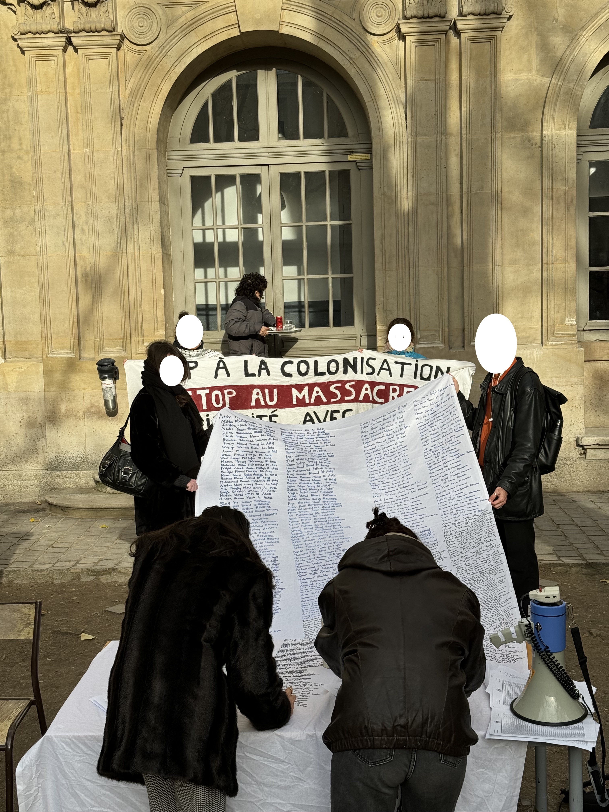
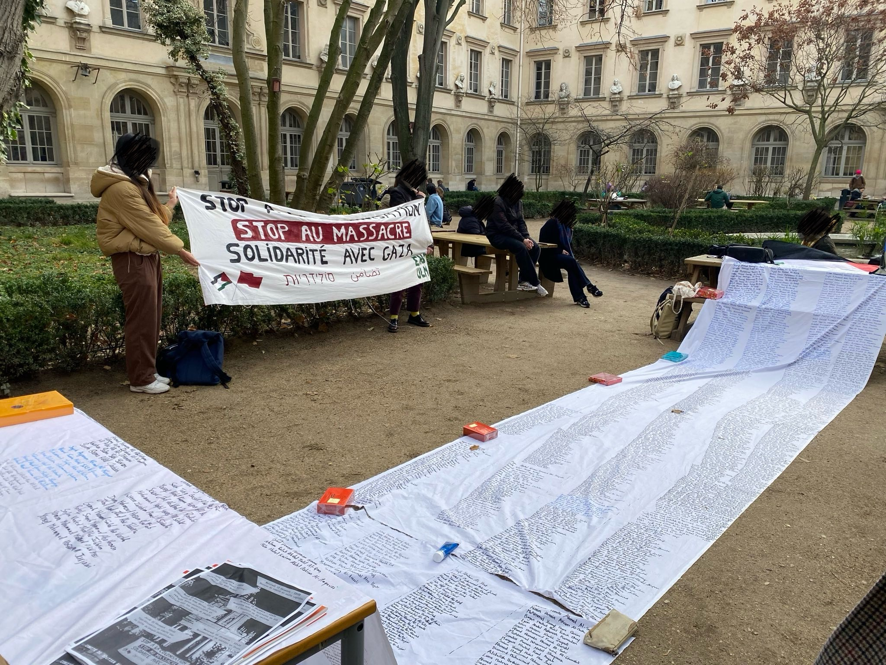
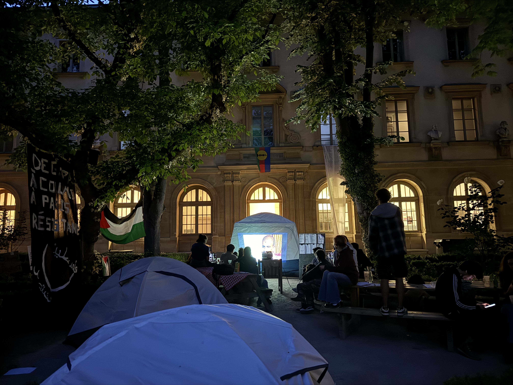
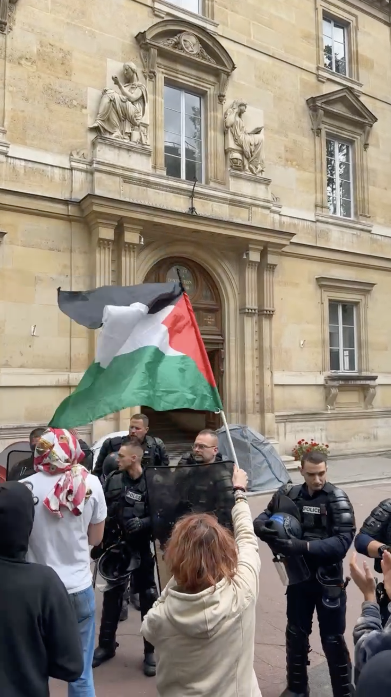
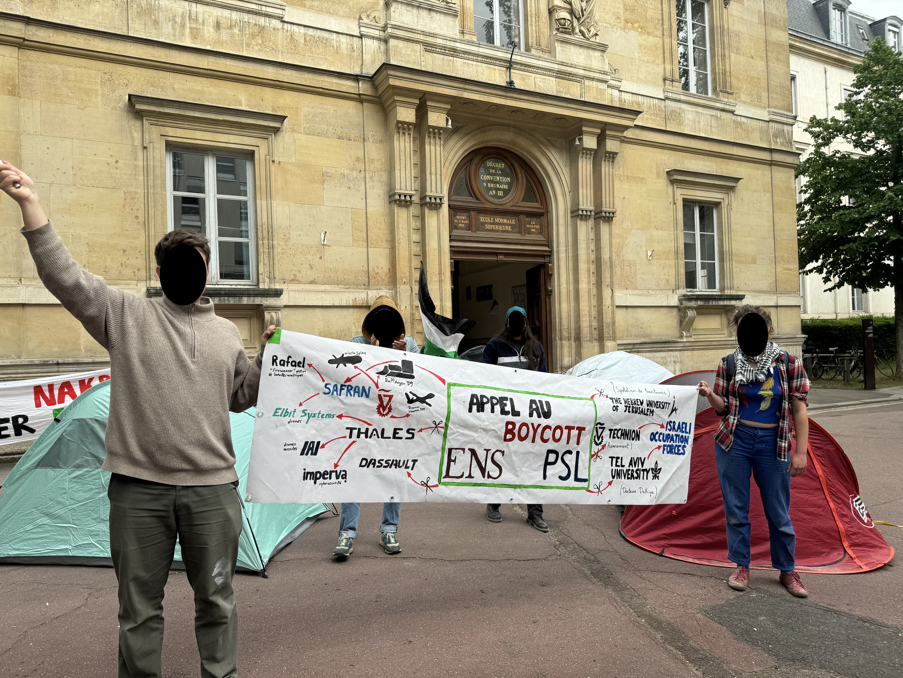
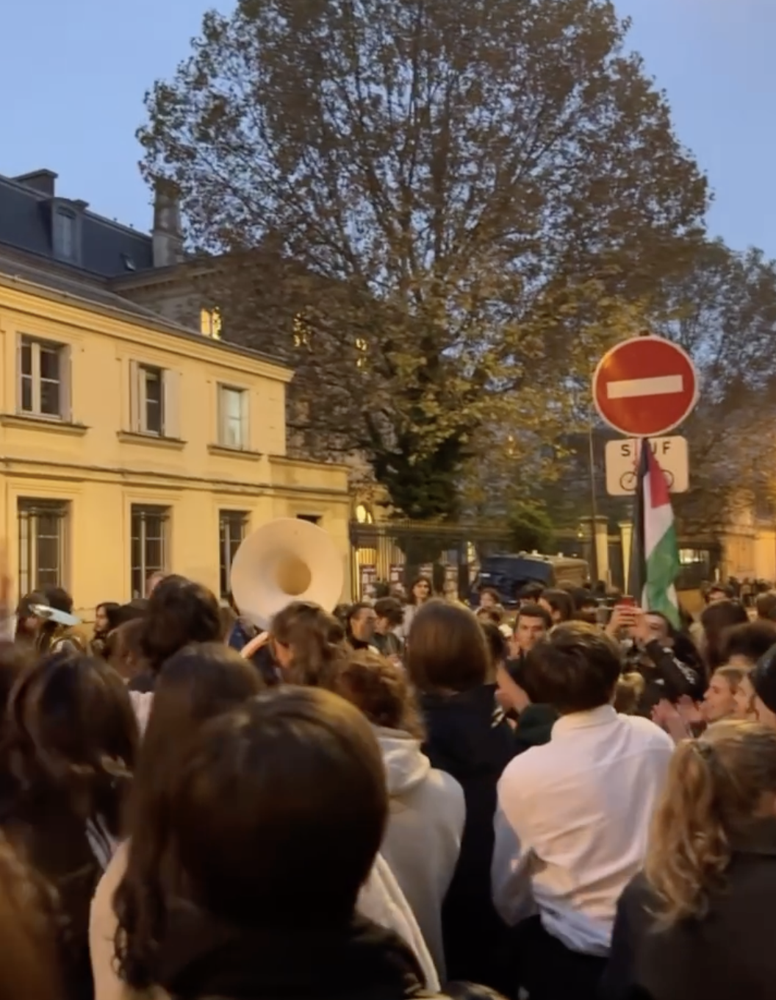

The student body of ENS has spent three years demanding institutional intervention to sever complicity with Israeli entities and to impose a cost on the continuation of genocide and apartheid.
In the first weeks of November 2023, ENS students, both Arab and Israeli, initiated a structured platform for dialogue. This recurring meeting, involving over 40 community members with varying perspectives, reached a unanimous conclusion during its second session. Following discussion of Professor Raz Segal’s work, an expert in Holocaust and genocide studies, the group formally determined that the rhetoric of Israeli leaders, the mass casualty count exceeding 10,000, and the systematic destruction of Gaza meet the legal criteria for genocide.

In parallel, students maintained daily vigils at ENS, providing a continuous public reckoning of the violence. By reading the names and ages of Palestinian victims, the students ensured that the community and the administration were fully aware of the severe humanitarian cost-including the fact that half of the recorded victims were children. Over 1,000 names were physically displayed on white fabric in the main garden for a full month. Critically, despite these constant public demands, ENS failed to publicly call for a ceasefire for several months, unlike it did for Ukraine, reportedly due to internal administrative reluctance to address the subject.

In May 2024, following months of sustained administrative avoidance, students established a research encampment to investigate the operational links and partnerships connecting ENS with Israeli institutions and arms manufacturers.

The students issued a set of formal demands: full institutional transparency, a definitive condemnation of the ongoing genocide, the establishment of a mandatory public dialogue forum to discuss the encampment’s findings with the wider community, and a commitment to establishing a public Ethics Committee. This committee would be empowered to evaluate the legality and morality of all partnerships with Israeli universities, thereby ensuring institutional accountability.

The administration officially responded to these demands on the sixth day by declaring a refusal to cooperate. Their response involved the deployment of dozens of armored police officers onto campus. These forces physically destroyed the encampment, aggressively pursuing the students, and forcibly repressing the gathering of supportive students outside. Such a level of state-backed physical intervention is unprecedented in the history of the school.

In direct response to these actions, the student body garnered substantial support. Consequently, a petition, bearing the signatures of over 400 members of the ENS community, was formally presented, urging the institution to comply with the demands previously articulated.
In direct response to the sustained pressure from the student community, in July 2024, the administrative council formally committed to establishing an Ethics Committee. This body was stipulated to evaluate the institution’s partnerships with Israeli universities. However, to date, this explicit institutional commitment has remained unfulfilled.
Following this institutional failure, in November 2024, students utilized direct action by blocking the Jourdan site, demanding the immediate fulfillment of the Ethics Committee mandate. The institution responded by deploying police forces to physically remove the protesters on the second day, an action deemed a severe and unprecedented violation of campus rights.
The protest deepened when over 200 students rallied at the historic ENS building demanding transparency and the severing of ties with Israeli institutions. Days later, when the administrative council again refused to acknowledge these concerns, students demonstrated their dissent by staging a protest directly in front of the council meeting.


A major breach of academic autonomy occurred in February 2025. Following pressure from UEJF ENS, the weekly academic seminar on Palestine was abruptly suspended without explanation. Subsequently, the community discovered photographic evidence, documenting the ENS director meeting with the national UEJF leader, a meeting which also included Minister of Higher Education Philippe Baptiste. Critically, this visit was compounded by the documentation that the national UEJF leader has previously featured in photographs with Israeli President Isaac Herzog. Furthermore, the UEJF ENS account publicly linked this visit to the seminar suspension. When viewed alongside the UEJF’s promotion of summer schools in the illegal colony of Kyriat Arba, and the use of a map incorporating Gaza, the West Bank, and the Syrian Golan Heights, this accumulation of evidence suggests a deep and established association between the UEJF and Israeli governmental structures, raising serious questions about the political nature of the influence on the school's academic policy. The administration's refusal to address this structural conflict forced students to protest outside the director’s office, demanding an end to political encroachment and the guarantee of academic freedom.


Throughout the last 3 years, the student body has repeatedly attempted to utilize every available channel to disseminate its findings and promote open academic dialogue. Given the systematic administrative restriction on public communication, whether through official events or mass mailing campaigns, the students have been forced to employ alternative communication channels, and to speak up at every school event, to address the wider ENS community and sustain a robust environment for debate.
Le corps étudiant de l’ENS exige depuis trois ans une intervention institutionnelle visant à rompre toute complicité avec les entités israéliennes et à imposer un coût à la poursuite du génocide et de l’apartheid.
Dans les premières semaines de novembre 2023, des étudiant·e·s de l’ENS, arabes comme israélien·ne·s, ont mis en place une plateforme structurée de dialogue. Cette réunion récurrente, réunissant plus de 40 membres de la communauté aux perspectives diverses, est parvenue à une conclusion unanime lors de sa deuxième séance. Après discussion du travail du professeur Raz Segal, spécialiste de la Shoah et des études sur les génocides, le groupe a formellement déterminé que la rhétorique des dirigeant·e·s israélien·ne·s, le nombre massif de victimes dépassant 10 000, et la destruction systématique de Gaza répondaient aux critères juridiques du génocide.
En parallèle, les étudiant·e·s ont maintenu des veillées quotidiennes à l’ENS, offrant un rappel public continu de la violence. En lisant les noms et les âges des victimes palestiniennes, les étudiant·e·s ont veillé à ce que la communauté et l’administration soient pleinement conscientes du coût humanitaire extrême, y compris du fait que la moitié des victimes recensées étaient des enfants. Plus de 1 000 noms ont été physiquement affichés sur du tissu blanc dans la cour principale pendant un mois entier. Fait crucial, malgré ces demandes publiques constantes, l’ENS n’a pas appelé publiquement au cessez-le-feu pendant plusieurs mois, contrairement à ce qu’elle avait fait pour l’Ukraine, apparemment en raison d’une réticence administrative interne à aborder le sujet.
En mai 2024, après des mois d’évitement administratif soutenu, les étudiant·e·s ont établi un campement de recherche afin d’enquêter sur les liens opérationnels et les partenariats reliant l’ENS à des institutions israéliennes et à des fabricants d’armes.
Les étudiant·e·s ont formulé un ensemble de revendications formelles : la transparence institutionnelle complète, une condamnation définitive du génocide en cours, la mise en place d’un forum obligatoire de dialogue public pour présenter les conclusions du campement à l’ensemble de la communauté, et l’engagement à créer un comité d’éthique public. Ce comité serait habilité à évaluer la légalité et la moralité de tous les partenariats avec les universités israéliennes, garantissant ainsi la responsabilité institutionnelle.
L’administration a officiellement répondu à ces revendications le sixième jour en déclarant son refus de coopérer. Sa réponse a impliqué le déploiement de dizaines de policiers en armure sur le campus. Ces forces ont physiquement détruit le campement, poursuivi agressivement les étudiant·e·s, et réprimé de force le rassemblement d’étudiant·e·s solidaires à l’extérieur. Un tel niveau d’intervention physique appuyée par l’État est sans précédent dans l’histoire de l’école.
En réponse directe à ces actions, le corps étudiant a obtenu un soutien substantiel. Par conséquent, une pétition portant les signatures de plus de 400 membres de la communauté de l’ENS a été formellement présentée, exhortant l’institution à se conformer aux revendications précédemment formulées.
En réponse directe à la pression soutenue de la communauté étudiante, en juillet 2024, le conseil d’administration s’est formellement engagé à établir un comité d’éthique. Cet organe devait évaluer les partenariats de l’institution avec les universités israéliennes. Cependant, à ce jour, cet engagement institutionnel explicite est resté lettre morte.
Face à cet échec institutionnel, en novembre 2024, les étudiant·e·s ont eu recours à l’action directe en bloquant le site Jourdan, exigeant l’exécution immédiate du mandat relatif au comité d’éthique. L’institution a répondu en déployant des forces de police pour expulser physiquement les manifestant·e·s le deuxième jour, une action considérée comme une violation grave et sans précédent des droits sur le campus.
La mobilisation s’est intensifiée lorsque plus de 200 étudiant·e·s se sont rassemblé·e·s dans le bâtiment historique de l’ENS pour exiger la transparence et la rupture des liens avec les institutions israéliennes. Quelques jours plus tard, lorsque le conseil d’administration a de nouveau refusé de reconnaître ces préoccupations, les étudiant·e·s ont manifesté leur désaccord en organisant une protestation directement devant la réunion du conseil.
Une atteinte majeure à l’autonomie académique a eu lieu en février 2025. À la suite de pressions de l’UEJF ENS, le séminaire académique hebdomadaire sur la Palestine a été brusquement suspendu sans explication. Par la suite, la communauté a découvert des preuves photographiques documentant une rencontre du directeur de l’ENS avec le dirigeant national de l’UEJF, rencontre à laquelle participait également le ministre de l’Enseignement supérieur Philippe Baptiste. Fait crucial, cette visite s’ajoutait au fait documenté que le dirigeant national de l’UEJF avait déjà figuré sur des photographies avec le président israélien Isaac Herzog. De plus, le compte UEJF ENS a publiquement lié cette visite à la suspension du séminaire. Considérée avec la promotion par l’UEJF de summer schools dans la colonie illégale de Kyriat Arba et l’usage d’une carte intégrant Gaza, la Cisjordanie et le Golan syrien, cette accumulation d’éléments suggère une association profonde et établie entre l’UEJF et les structures gouvernementales israéliennes, soulevant de graves questions sur la nature politique de l’influence exercée sur la politique académique de l’école. Le refus de l’administration d’aborder ce conflit structurel a contraint les étudiant·e·s à manifester devant le bureau du directeur, exigeant la fin de l’emprise politique et la garantie de la liberté académique.
Tout au long des trois dernières années, le corps étudiant a tenté à maintes reprises d’utiliser tous les canaux disponibles pour diffuser ses conclusions et promouvoir un dialogue académique ouvert. Face à la restriction administrative systématique de la communication publique, que ce soit par les événements officiels ou par les campagnes générales d’envoi de courriels, les étudiant·e·s ont été contraint·e·s de recourir à des canaux de communication alternatifs et de prendre la parole lors de chaque événement de l’école afin de s’adresser à l’ensemble de la communauté de l’ENS et de maintenir un environnement robuste de débat.